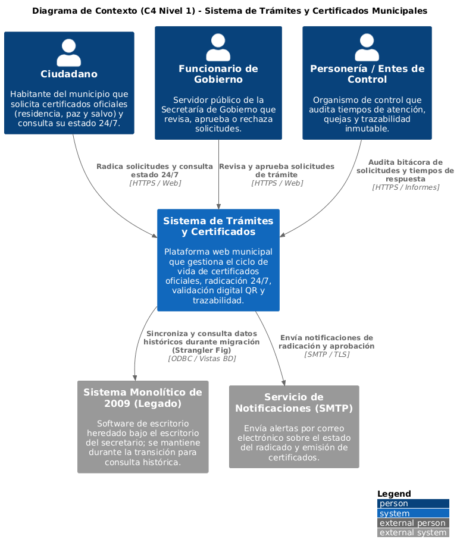
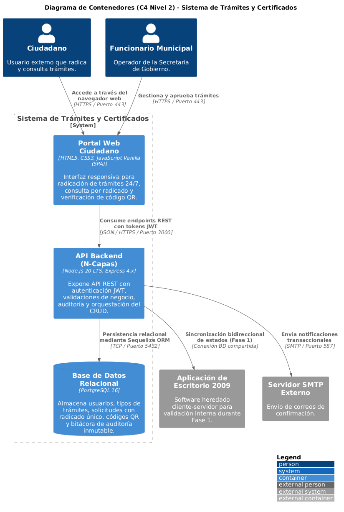
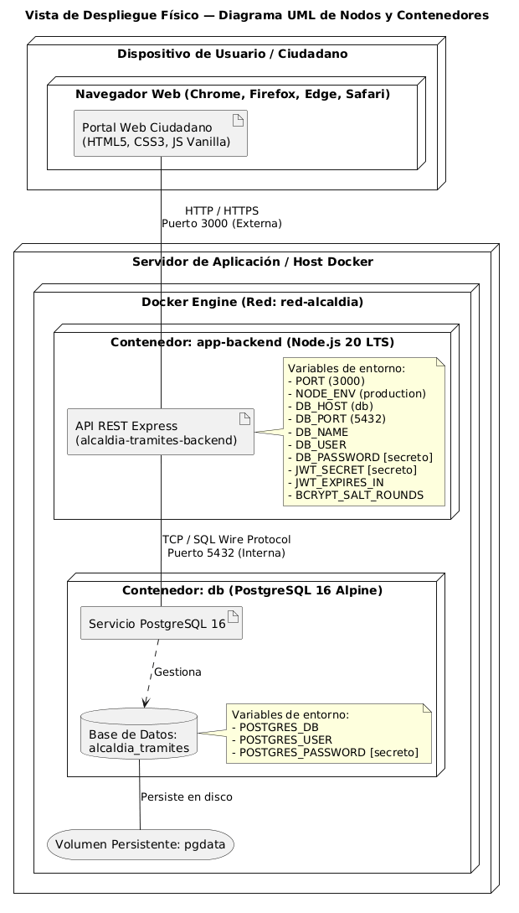

Sistema de Gestión y Emisión Digital de Trámites y Certificados 24/7
Caso 2: Alcaldía Municipal — Defensa de Arquitectura de Software
Ficha Técnica de la Evaluación
- Estándar Documental: arc42 simplificado + Modelo C4 (Niveles 1 y 2).
- Patrón Arquitectónico: N-Capas con Estrategia Strangler Fig (Higuera Estranguladora).
- Corte Vertical (Walking Skeleton): Radicación y Verificación HU-01 de extremo a extremo.
- Stack Tecnológico: Node.js 20 LTS + Express + PostgreSQL 16 + Docker + WebSockets.
- Calidad Verificada: 8/8 Pruebas automatizadas en Jest pasando al 100%.
Estructura de la Defensa (15 Minutos)
- Bloque 1 (Min 0-3): El Problema de 2009 vs Solución Strangler Fig.
- Bloque 2 (Min 3-6): Modelo C4 + Diagrama UML de Despliegue Físico.
- Bloque 3 (Min 6-9): Dinámica ADR Battle (ADR-001, ADR-002, ADR-003).
- Bloque 4 (Min 9-12): Sustentación Clase 4 (Del diagrama a la tabla + INSERT venenoso).
- Bloque 5 (Min 12-15): Demostración en vivo en Postman y Terminal.
Demostrar solvencia técnica para justificar por qué se tomaron las decisiones arquitectónicas, argumentar los trade-offs asumidos, evidenciar que la base de datos PostgreSQL rechaza datos ilegales y comprobar que el sistema está corriendo 100% funcional.
El Problema de la Alcaldía (2009) vs La Solución N-Capas
De las filas a las 5:00 a.m. a la expedición digital 24/7 sin colas
El Sistema Heredado (Año 2009)
- Servidor Físico Único: Operaba bajo el escritorio del secretario de despacho, sin UPS ni redundancia.
- Caídas Continuas: Se congelaba a mitad de jornada; solo un funcionario específico sabía reiniciarlo.
- Filas Presenciales de Madrugada: Ciudadanos madrugaban desde las 5:00 a.m. para conseguir 1 de los 40 cupos diarios.
- Queja ante Personería: Múltiples reclamos formales por pérdida de turnos y falta de transparencia.
- Cero Auditoría: Registros alterables en archivos planos locales sin trazabilidad.
La Solución Arquitectónica
- Patrón Strangler Fig: Fachada web moderna que intercepta trámites sin apagar de golpe el sistema viejo.
- Disponibilidad 24/7: Radicación y consulta en línea desde cualquier celular o computador.
- Fe Pública Criptográfica: Certificados con código QR oficial y hash SHA-256 institucional.
- Persistencia Robusta: PostgreSQL 16 con transacciones ACID, llaves foráneas y borrado lógico.
- Bitácora Inmutable: Registro auditable de cada radicación, cambio de estado e IP de origen (RF-09).
«Profesora, no propusimos un 'Big Bang' que detuviera la alcaldía ni un microservicio sobredimensionado. Aplicamos la Higuera Estranguladora (Strangler Fig) para modernizar por fases con bajo riesgo y alta mantenibilidad.»
Vistas C4: Contexto (Nivel 1) y Contenedores (Nivel 2)
Límites del sistema, actores humanos y arquitectura desacoplada


Responsabilidades de los Contenedores
1. Portal Web Ciudadano (HTML5/JS): UI ligera responsive (Mobile-First) accesible sin barreras tecnológicas.
2. API REST Backend (Node.js 20): Enrutador, middlewares JWT, controlador de negocio y pool Sequelize.
3. Base de Datos (PostgreSQL 16): Almacén transaccional ACID con volumen persistente en Docker.
Atributos de Calidad Cuantitativos y Restricciones
Métricas medibles y verificables que sustentan cada decisión
| Atributo (ISO 25010) | Estímulo y Escenario | Métrica Medible | Verificación |
|---|---|---|---|
| AC-01: Seguridad | Petición sin token o token alterado a POST /api/solicitudes. | 100% de rechazos HTTP 401; contraseñas con bcrypt factor ≥ 10. | Jest Test 1 y Postman Item 2. |
| AC-02: Desempeño | 50 solicitudes concurrentes de radicación o consulta en el servidor. | Percentil 95 (P95) ≤ 800 ms; 0% errores 500 no controlados. | Benchmarking Autocannon / JMeter. |
| AC-03: Mantenibilidad | Agregar un nuevo campo o trámite municipal al sistema. | Modificación en ≤ 3 archivos (Modelo, Migración, Controlador). | Inspección de git diff de N-Capas. |
| AC-04: Confiabilidad | Caída inesperada o kill del proceso del backend. | Auto-reinicio en < 10 segundos vía Docker; /api/health vuelve a UP. | Simulación kill de contenedor Docker. |
Restricciones Técnicas (RT)
• Motor relacional SQL estándar (PostgreSQL 16) obligatorio para garantizar transacciones ACID y llaves foráneas.
• API REST sobre HTTPS transportando exclusivamente payloads JSON.
Restricciones Administrativas (RA)
• Ley 80 de 1993: Licitación por fases sin tecnologías cautivas (no vendor lock-in).
• RA-03: Equipo municipal cuenta con 1 solo técnico de soporte sin perfil programador.
Diagrama UML de Despliegue Físico
Distribución en nodos, contenedores Docker, puertos y almacenamiento persistente

Componentes Físicos Obligatorios
- Nodo Servidor Docker Host: Máquina física o VM donde corre Docker Engine.
- Contenedor app-backend: Empaqueta Node.js 20 con Express. Escucha en el PUERTO 3000 (HTTP/WS).
- Contenedor db: Empaqueta postgres:16-alpine. Escucha en el PUERTO 5432 (TCP/SQL).
- Volumen Persistente pgdata: Mapeo
pgdata:/var/lib/postgresql/datapara no perder trámites si el contenedor se destruye. - Red Virtual Bridge red-alcaldia: Aísla la base de datos de accesos externos directos.
«¿Por qué el puerto 5432 solo se enlaza en la red bridge y no directamente al público?». R/: Por el principio de menor privilegio (AC-01 Seguridad). Solo el contenedor backend debe tener acceso al puerto de PostgreSQL; los ciudadanos interactúan exclusivamente por el puerto 3000 vía API REST.
ADR-001: N-Capas + Strangler Fig vs Microservicios
Modernización progresiva y arquitectura monolítica modular
Mantenibilidad y Bajo Riesgo
- Mantenibilidad (AC-03): Separa nítidamente interfaz, reglas y base de datos; modificar una capa no afecta las demás.
- Viabilidad Pública (RA-01): Permite contratar por etapas (Fase 1: Ventanilla web; Fase 2: Emisión QR; Fase 3: Desmantelar legado).
- Confiabilidad (AC-04): Si el PC viejo falla, la ventanilla web sigue recibiendo trámites 24/7 sin interrumpir el servicio.
Duplicidad y Deuda Técnica
- Duplicidad Temporal: Durante la migración coexisten dos interfaces (portal web y ejecutable viejo).
- Riesgo de Concurrencia: Si ambos sistemas escriben en la misma BD, se requieren vistas y bloqueos estrictos.
- MITIGACIÓN OBLIGATORIA: Es deuda técnica controlada y temporal; en Fase 3 se retira el binario de 2009 al 100%.
Porque una arquitectura de microservicios introduce sobrecarga operativa injustificada (latencia de red, orquestación Kubernetes, transacciones distribuidas y monitoreo distribuido) inviable para una alcaldía con ~200 trámites semanales y un único técnico de soporte (RA-03).
ADR-002: JWT sin Estado (Stateless) vs Sesiones en Servidor
Autenticación basada en tokens criptográficos HMAC SHA-256
Escalabilidad y Aislamiento
- Escalabilidad (AC-02): El backend no guarda sesiones en memoria; levantar réplicas en Docker no desloguea a los usuarios.
- Criptografía Fuerte (AC-01): Firma digital HMAC SHA-256 inalterable y contraseñas hasheadas con bcrypt ≥ 10 salt rounds.
- Eficiencia de Costos: No obliga a administrar ni pagar una base de datos en memoria (Redis) para una alcaldía pequeña.
Revocación y Tamaño de Cabecera
- Revocación Difícil: Un token emitido es válido hasta que expire, salvo que se use una lista negra (blacklist).
- Mayor Overhead HTTP: El header Authorization: Bearer transporta un string más pesado que una cookie tradicional.
- MITIGACIÓN OBLIGATORIA: Vigencia corta (8 horas) y verificación obligatoria de
activo=trueen BD para acciones sensibles.
En src/middlewares/auth.middleware.js: intercepta la petición, extrae el token del header, ejecuta jwt.verify() con la clave secreta y añade el objeto req.usuario con su rol para el control de acceso (RBAC).
ADR-003: PostgreSQL 16 + ORM Sequelize vs NoSQL / SQL Puro
Integridad referencial estricta, modelos tipados y sanitización nativa
Integridad ACID y Seguridad
- Fe Pública y ACID (AC-01): Las solicitudes y certificados requieren transacciones atómicas y FKs (descartando NoSQL).
- Protección Anti-Inyección SQL: Sequelize sanitiza y parametriza automáticamente todas las consultas.
- Mantenibilidad (AC-03): Migraciones y esquemas versionados en código; cualquier programador nuevo entiende la BD.
Sobrecarga y Consultas N+1
- Latencia de Abstracción: Un ORM añade milisegundos de sobrecarga frente a un driver SQL puro optimizado.
- Problema N+1 Queries: Si no se configuran relaciones eagerly, puede disparar múltiples queries innecesarios.
- MITIGACIÓN OBLIGATORIA: Uso explícito de
includecon JOINs, pool de 10 conexiones y SQL nativo para reportes masivos.
En src/config/database.js se implementa el patrón Singleton para garantizar una única instancia del pool de conexiones hacia PostgreSQL, evitando el colapso por saturación de descriptores de sockets.
Del Diagrama a la Tabla: INSERTs Venenosos y Cambio Sorpresa
Correspondencia 1:1 entre modelos UML y restricciones físicas en PostgreSQL 16
El INSERT Venenoso (Prueba de Fuego)
Veneno 1: Dos Certificados para la Misma Solicitud
INSERT INTO certificados (solicitud_id, ...) VALUES (1, ...);
→ ERROR: duplicate key violates unique constraint "uq_certificado_solicitud"
Veneno 2: Estado 'perdida' no reconocido
INSERT INTO solicitudes_tramite (estado, ...) VALUES ('perdida', ...);
→ ERROR: new row violates check constraint "solicitudes_tramite_estado_check"
El Cambio Sorpresa de la Personería
Exigencia: Saber con nombre propio qué funcionario expidió cada certificado.
Mala Práctica Descartada: Agregar una columna de texto libre funcionario_nombre VARCHAR(100) (destruye integridad y normalización).
Solución Arquitectónica Correcta:
CREATE TABLE funcionarios (id, usuario_id FK UK, codigo_funcionario UK, cargo, dependencia);
ALTER TABLE certificados ADD COLUMN funcionario_id REFERENCES funcionarios(id);
SELECT estado, COUNT(*) AS total FROM solicitudes_tramite WHERE activo AND created_at >= date_trunc('week', CURRENT_DATE) GROUP BY estado;
Walking Skeleton HU-01: Extremo a Extremo en Tiempo Real
Travesía completa por todas las capas de la arquitectura con WebSockets
Capas 1 y 2
Vista Web (public/): Diligencia formulario de radicación.
Rutas & Middlewares: solicitud.routes.js y auth.middleware.js validan JWT (401 si no hay token).
Capas 3 y 4
Controlador: Comprueba no duplicidad (409 Conflict), genera radicado RAD-2026-XXXXX y hash SHA-256.
ORM Sequelize: Transacción ACID parametrizada.
Capa 5 & Tiempo Real
PostgreSQL 16: Almacena fila con borrado lógico (activo=true).
Socket.io: Emite evento nueva_solicitud al panel de funcionarios en vivo.
La suite de integración valida: 1) Rechazo sin token (401), 2) Radicación exitosa (201), 3) Prevención de duplicado (409), 4) Listado (200), 5) Consulta por radicado (200), 6) Actualización (200), 7) Borrado lógico (204) y 8) Health Check UP (200). Todas pasan en 1.9 segundos.
Tabla Maestra de Códigos de Respuesta HTTP
Semántica precisa según el estándar RFC 9110 para el sistema municipal
| Código HTTP | Significado Estándar | Caso Exacto en Nuestro Sistema Municipal |
|---|---|---|
| 200 OK | Petición exitosa con retorno de datos. | Consultar estado por radicado o verificar autenticidad de código QR. |
| 201 Created | Recurso creado satisfactoriamente en el servidor. | Radicación exitosa de solicitud o emisión oficial de certificado. |
| 204 No Content | Operación exitosa que no retorna cuerpo. | Cancelación de solicitud aplicando borrado lógico (DELETE /api/solicitudes/:id). |
| 400 Bad Request | Petición sintácticamente incorrecta o incompleta. | Faltan campos obligatorios en el formulario o tipos de datos erróneos. |
| 401 Unauthorized | Autenticación obligatoria no provista o inválida. | Intento de radicar sin haber iniciado sesión o token JWT manipulado/expirado. |
| 403 Forbidden | Autenticado pero sin privilegios suficientes. | Ciudadano intentando cancelar un trámite ajeno o acceder a rutas de funcionarios. |
| 404 Not Found | Recurso no encontrado o inactivo. | Consulta de un número de radicado inexistente o tipo de trámite inactivo. |
| 409 Conflict | Conflicto con el estado actual del servidor. | Intento de radicar un certificado duplicado ya activo para el mismo predio. |
Preguntas Trampa del Pool de la Docente
Haz clic en cada tarjeta para revelar la respuesta maestra
src/config/database.js para mantener un único pool de 10 conexiones hacia PostgreSQL en lugar de abrir una conexión costosa por cada petición HTTP.
activo = false y conserva el historial inmutable para auditorías disciplinarias y fiscales.
Estrategia Minuto a Minuto para Calificación Máxima
Distribución del tiempo y conclusiones de la sustentación oral
Cronograma de Exposición (15 Minutos)
- Min 0-2: Contexto del Problema Real (el PC de 2009 bajo el escritorio).
- Min 2-5: Modelo C4 + Diagrama UML de Despliegue Físico en Docker.
- Min 5-8: ADR Battle del Escenario (ADR-001, ADR-002, ADR-003).
- Min 8-11: Sustentación Clase 4 (Del diagrama a la tabla e INSERTs venenosos).
- Min 11-14: Demostración en vivo (Postman, WebSockets y npm test 8/8).
- Min 14-15: Conclusiones y cierre ejecutivo.
Conclusiones Arquitectónicas
- La arquitectura en N-Capas con Strangler Fig resuelve la crisis de filas de la alcaldía con bajo riesgo de inversión y modernización por fases.
- Los ADRs sustentan los sacrificios (trade-offs) asumidos y su plan formal de mitigación técnica.
- El corte vertical HU-01 demuestra en código vivo que la arquitectura funciona y cumple con los estándares ISO/IEC 25010.
Todos los entregables (DAS.md, DAS.docx, DAS.pdf, Guía de Sustentación en Word, Diagramas PNG y Corte Vertical con WebSockets) están completamente sincronizados y listos para la defensa ante la docente.